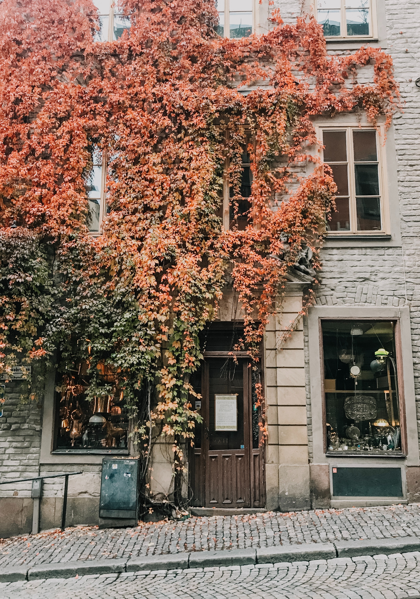
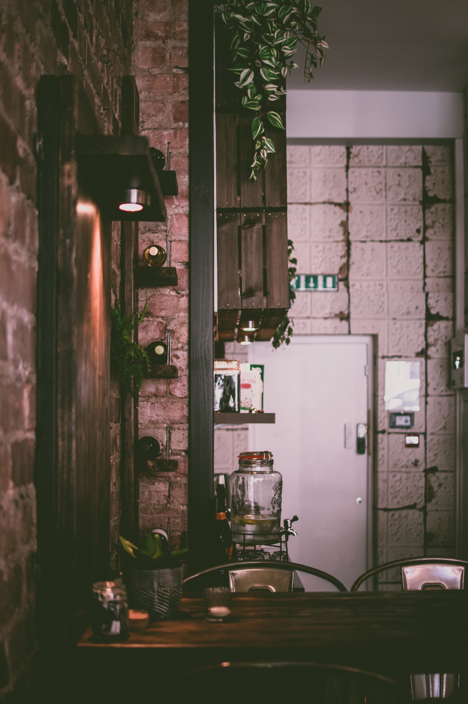
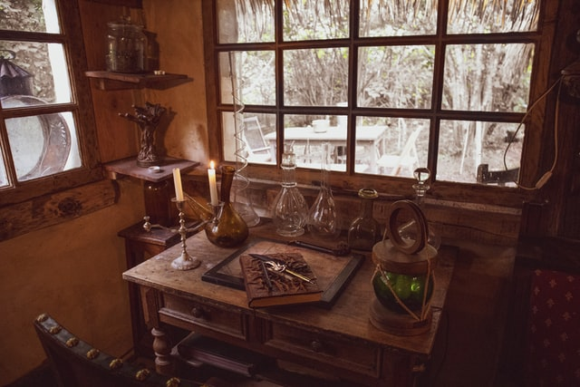

Welcome to our shop! This building has been in our family for many
years and holds many memories. Our walls do talk.

Our workshop looks like a home because well, it is. The best place to
get genuine home made remidies!

We use everything we sell for ourselves and our families.

Journaling is a brilliant way to clear the mind. We have a mighty
selections of books to do the trick!
